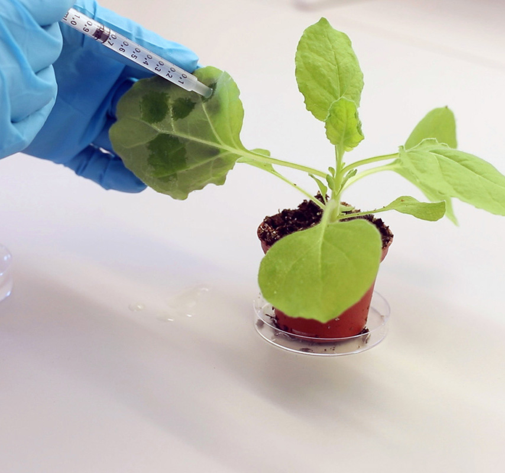
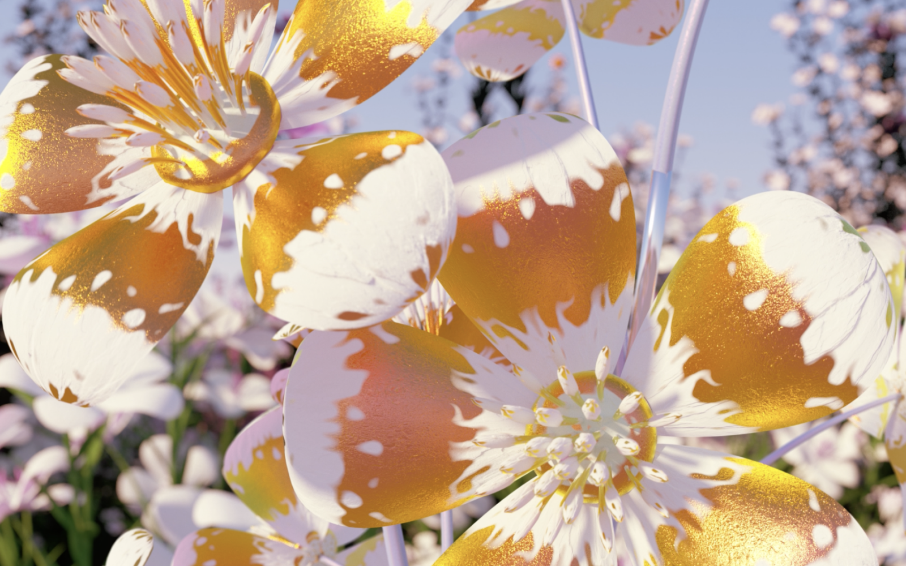

Non-Fungible Plants
Non-Fungible Plants a été créé par Cyrus Clarke et accompagné par Grow Your Own Cloud.
Ce projet fascinant propose les premiers NFT à base de plantes !
Cette initiative expérimentale souhaite "planter" des données, des NFT ou des objets numériques au sein même d'organismes végétaux, et de proposer ainsi une alternative plus "verte" au stockage numérique classique.
Contexte
Ce projet s'inscrit dans un questionnement bien précis : comment la technologie (en particulier la blockchain et les NFT) peut-elle interagir avec des formes biologiques et s'échapper des infrastructures numériques énergivores ?
L'idée de ce projet démarre avec l'observation des plantes et leur pouvoir d'absorption du CO2. Ce phénomène fascinant, qui aide à restaurer les écosystèmes et à maintenir un équilibre sur la planète, intéresse vivement Cyrus Clarke ainsi que GYOC. Les Non-fungible Plants utilisent d'une part ce "super pouvoir" de stockage du carbone, mais deviennent aussi des vecteurs de données ou de propriétés numériques. Cette idée s'inscrit dans la recherche d'un futur harmonieux où la technologie coexiste avec la nature.
Les différentes phases
La première phase du projet est liée avec le lancement du site NFP.garden, dédié aux jardins numériques. L'expérience utilisateur est conçue pour susciter la curiosité des visiteurs en les invitant à déambuler dans un véritable jardin virtuel dont le mantra est "Imaginez créer des NFT vivants". Plusieurs étapes devront se déployer dans l'optique d'un "plan de croissance", qui reprend avec une touche d'humour les terminologies associées à la spéculation financière des cryptomonnaies.
- La première étape est la pré-série (disponible sur Artizen). Les utilisateurs peuvent acquérir une œuvre d'art numérique sous forme de NFT via la plateforme Artizen.
- Vient ensuite la phase d'amorçage. Les collectionneurs auront l'opportunité de faire germer des graines numériques. Chaque graine sera unique et générée à partir de l'adresse du portefeuille numérique du collectionneur. Cette adresse sera conservée et utilisée pour la phase suivante.
- L'introduction en bourse (IPO) utilisera chaque adresse de portefeuille pour créer un NFT collectif, stocké dans l'ADN d'une plante. Ainsi, chaque participant fera partie de la toute première plante non fongible.
Principales caractéristiques du projet
Ce projet encode des NFT directement dans des organismes vivants. Les données (0/1) du NFT sont traduites en bases d'ADN (A,T,G,C), synthétisées, puis intégrées à l'ADN d'une plante. Cette dernière devient le support biologique du token, capable de stocker des informations numériques sans impact écologique, car la plante reste vivante et continue à absorber du CO2. Chaque "plante NFT" est donc à la fois un être vivant et un support numérique d'un token unique, cela brouille la frontière entre terrestre et numérique.
Non fungible plants revendique être la première initiative Web3 véritablement organique en proposant les premiers NFT à base de plante!
Enjeux et portée
Environnementaux NFP interroge la dépendance des infrastructures numériques aux énergies carbonées et se présente même en temps sur solution face à cette problématique.
Conceptuels Cette œuvre pose les questions sur les notions d'unicité, d'authenticité et de valeur numérique (via le NFT) quand celle-ci est associée à une plante vivante.
Techniques et éthiques Comment garantir que la plante sera en mesure de survivre ? Quelles sont les implications écologiques de "modifier" et "instrumentaliser" une plante pour y stocker des données ? L'artiste affirme que leurs techniques n'ont aucun impact négatif sur l'organisme vivant qu'ils utilisent...
Critiques
Non-fungible Plants reste tout de même expérimental et conceptuel : l'aboutissement complet a besoin de plus de développement. Il faudra alors penser à la durabilité réelle : une plante finit toujours par mourir, que devient alors le NFT qui lui était associé ? Finit il par mourir aussi ? Quel est le lien concret entre un organisme vivant et une donnée numérique à long terme ? Le lien entre "valeur numérique" et "valeur biologique" risque d'être compliqué à évaluer et à monétiser dans notre marché classique.
Conclusion
En résumé, NFP un projet qui vient combiner art, sciences, technologie et économie. Il nous invite à repenser nos dépendances aux infrastructures numériques énergivores et à imaginer un futur où nature et technologies pourraient coexister en harmonie. Et si nos objets numériques ne résidaient plus uniquement sur des immenses data centers mais dans des organismes qui respirent ? C'est une idée audacieuse, reste encore à voir la façon dont elle se concrétisera dans le temps.